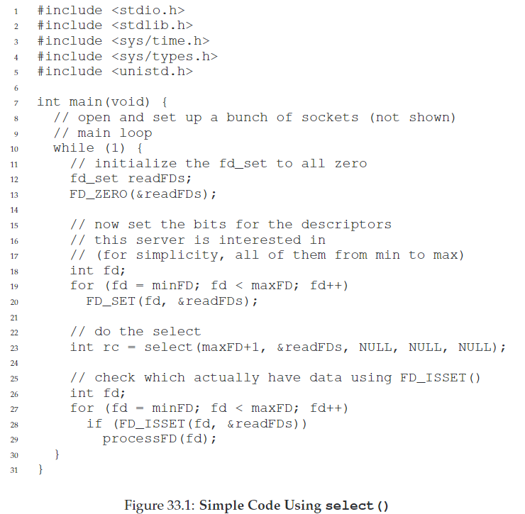

33. Event-based Concurrency
基于事件的并发常用于server。它有两重问题：一是多线程下容易出错，如锁丢失、死锁等；二是多线程调度由OS管理，程序员几乎没有控制权。
CRUX：如何不用线程构建并发服务器？
33.1 The Basic Idea: An Event Loop
event loop的伪代码如下：
while (1) {
events = getEvents();
for (e in events)
processEvent(e);
}
代码非常简单，通过getEvents()等待事件，再逐个处理。处理每个事件的代码叫做event handler。重点注意，当一个handler处理一个event，这个event是系统中唯一发生的活动。
但问题在于：如何确切地直到server决定让哪一个事件发生？server如何判断一条message是否到达？
33.2 An Important API: select() (or poll())
int select(int nfds,
fd_set *restrict readfds,
fd_set *restrict writefds,
fd_set *restrict errorfds,
struct timeval *restrict timeout);
- nfds代表每个set中检查的fd数量（0到nfds-1）
- readfds代表关注是否可读
- writefds代表关注是否可写
- errorfds关注是否有异常条件
- timeout代表超时等待时间，NULL表示允许无限block直到descriptor is ready，0表示立刻返回
ASIDE：
阻塞blocking（或同步synchronous）接口完成所有工作才返回，而非阻塞non-blocking（或异步asynchronous）接口完成一项工作就会立刻返回。
33.3 Using select()

TIP：不要阻塞event-based servers。event-based servers能够精细控制任务调度，但是为了保持这种控制，不能使用阻塞caller执行的call。
33.4 Why Simpler? No Locks Needed
因为同时间只有一个事件正在被处理，所以不需要获得或释放锁。
event-based server不会被其他线程打断，因为它是绝对单线程的。
因此，多线程中并发的bug不会再event-based server中出现。
33.5 A Problem: Blocking System Calls
在多线程中，当一个线程发起I/O请求而被挂起，其他线程还可以允许，从而允许了overlap。
但是event-based方法是单线程的，只有一个main event loop，如果一个handler发起一个system call，就会进入阻塞状态直到call完成。使系统闲置，浪费大量资源。
33.6 A Solution: Asynchronous I/O
一种解决方案是使用异步I/O。用一种数据结构（aiocb）记录I/O行为，当应用发起I/O请求后会立即返回，异步I/O根据记录执行，并提供接口来查询I/O是否完成。
struct aiocb {
int aio_fildes; // File descriptor
off_t aio_offset; // File offset
volatile void *aio_buf; // Location of buffer
size_t aio_nbytes; // Length of transfer
};
Mac中的异步读API：
int aio_read(struct aiocb *aiocbp);
Mac中的查看异步I/O是否已完成的API：
int aio_error(const struct aiocb *aiocbp);
不过，当I/O请求很多事，频繁查询接口会耗费大量时间。因此一些系统中提供了基于interrupt的办法，用UNIX signal来提醒应用异步I/O已经完成。从而免于重复查询。
33.7 Another Problem: State Management
另一个问题：当event handler发起异步I/O，它必须将一些程序的状态打包，当I/O完成后发给下一个handler来使用。这在多线程程序中是不必要的，因为程序的状态都在栈上。因此这种工作也叫手动栈管理（manual stack management）。
解决方案是使用一种称为continuation的老编程语言结构：在某些数据结构中记录完成处理该事件所需要的信息，当I/O完成时，查找所需信息并处理。
33.8 What Is Still Difficult With Events
- 多CPU情况下，每个handler并行，不得不用锁来处理同步问题。
- 不能很好地整合一些系统活动，比如分页。当发生页错误，server会被阻塞，影响性能。
- 代码随着时间的推移很难管理。例如从非阻塞改变为阻塞，API的语义也将改变。
- 不易用。例如select()，通常还需要组合用于网络的select()和用于磁盘I/O的API call。